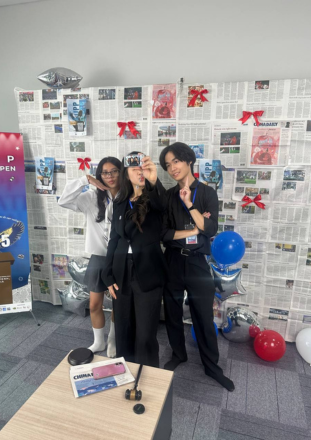
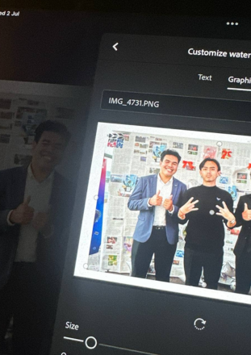
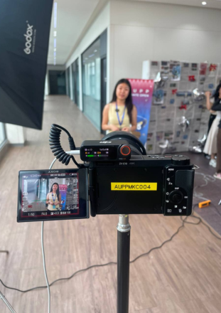
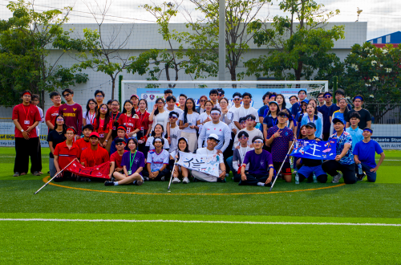
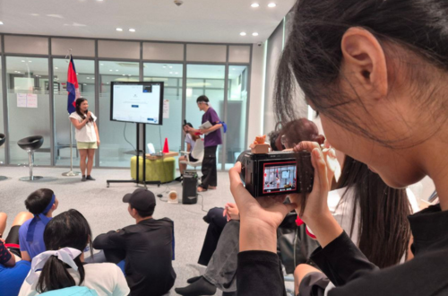
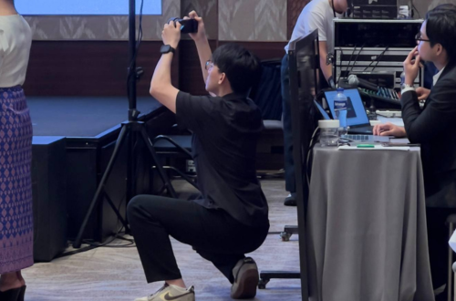
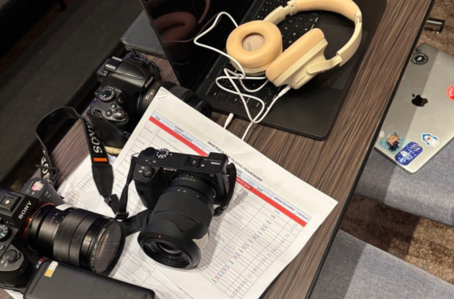

PHOTOBOOTH

Event Coverage captures the energy, highlights, and memorable moments of every occasion through creative and professional visual storytelling. From campus activities to special events, it serves as a way to document experiences and preserve them in a compelling and engaging form.
AUPP Filmmakers Club was the media partner with AUPP Debate Society for AUPP Debate Open 2025. We provided full event coverage including:



For AUPP × SWITCH Charity Undokai 2025, AUPP Filmmakers Club proudly took part as the media partner, delivering full event coverage. From exciting activities to meaningful interactions, we documented the spirit, movement, and vibrant atmosphere of the event.


INVICTUS - The Grand Launch Event was a commissioned media coverage project for an external school event. Our team delivered event photography and two video recaps, capturing the highlights, atmosphere, and memorable moments of the launch through creative visual storytelling.

